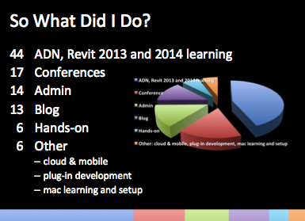

What I Do, Wall Layers and Open Transactions
One of my tasks today and tonight will be a minimal little contribution to an internal ADN meeting, where I was asked to explain briefly to my colleagues in just a couple of minutes what my job involves and what I have been up to for the last couple of months. Tonight, since we have a session each for the western and eastern hemisphere, and the eastern one will require me to set my alarm for 2:30 tomorrow morning.
I thought I might as well share the result here with you also, to provide a rough idea for all of what my everyday work looks like.
Further down I'll also mention two recent cases, dealing with:
- Determining wall layer materials, areas and volumes
- Determining whether a transaction is open
- The Application IsQuiescent property
What I Do
My spontaneous picture of my work life is that I never do anything at all except dealing with ADN cases and writing The Building Coder blog.
My main motivation is probably solving problems, but maybe even stronger than that an urge to help people in whatever manner possible.
Unfortunately for me, I seem to often find it more helpful just to shuffle information around that I receive from others, rather than performing my own research. I would love to spend more time programming and exploring new issues myself, rather than managing information provided by others.
I have a large number of other interests besides that, such as reading, languages, nature, sports, especially climbing, dancing, 5rhythms and dj-ing.
I also have four grown up kids who have left home by now and are out in the world doing their own things, such as composing their own music.
Job-wise, I recently switched from a Windows computer to a Mac and still enthusiastic about that, busy retraining my fingers and compiling open source software. I am a keyboard user and avoid touching the mouse or using the GUI whenever possible. It will take much longer to train my fingers to all the new shortcuts, but they are starting to adapt. I am overjoyed at having a Unix command console now again, after a couple of decades of cmd.exe.
When I offered to talk, I said that I would only be able to cover 30 seconds, since all I do is handle cases and blog, and that is quickly said.
Of course I also do some work creating presentations and conducting trainings at conferences and events such as AU (2, 3) or DevCamp (2, lab).
Jim suggested I could mention my visit to Australia.
Yes, indeed, I went there and gave a Revit API training, followed by a three-day DevLab. It really was a great learning experience and good fun. Some of the participants were extremely well versed in the Revit product usage, and the importance of knowing the product in depth before embarking on any add-in development plans was strongly reinforced.
In spite of that, I spent a while with one of the participants discussing how to implement a family and a command to toggle the family instance state between two conditions, until we discovered that we could save hundreds of lines of code, family complexity, workflow development and user training by just using the existing functionality already provided by Revit: define two different types for the two states, and let the user switch via the instance properties using standard built-in tools – a very impressive experience, cool.
What I Actually Did
That said, I do indeed spend almost all my time with cases and the blog. In 2012 ADN provided a couple of hands-on classroom trainings. The trend in some highly developed areas of the world seems to be going away from hands-on face-to-face trainings and meetings and moving towards virtual interactions and blogging instead.
So, to answer the question more precisely, I put together some statistics on the time I spent on various tasks in the year 2012 in per cent:
- 44% – ADN cases, special support cases, learning new Revit API features cases, newsletter articles
- 17% – Conferences: Autodesk University, DevCamp, DevDays, webcasts
- 14% – Admin including meetings and participating in trainings
- 13% – Blogging
- 6% – Providing hands-on Revit API training
- 6% – Other stuff, including cloud & mobile, plug-in development, Mac learning and setup

I was a bit surprised by some of these results and find them interesting. Maybe you do too.
The results are rather skewed, actually, since a lot of the work I do for the blog stems from case answering, trainings, and conference preparations, so maybe it would be more realistic to classify something between a fifth and a third of the case, conference and training work as blogging instead.
Basically, the intention of the blog is to eliminate the need for questions via ADN cases and discussion forum threads, and simultaneously the latter feed the former.
You could even go to the extreme of saying teat the blog is a filter for everything I do: if it is useful for the blog and can be shared in public, it is worthwhile doing; if not, not.
Therefore, let's return to the Revit API and present some notes on the two cases I mentioned above.
Determining Wall Layer Materials, Areas and Volumes
I recently started looking at foreign language cases as well as English ones, just for fun. I am very impressed by the advances in automatic translation. Here is a question on wall layers:
Question: 如何获取墙的材质厚度、名称等属性
我想请问下墙分层材料能够获取哪些信息？
我通过PickObject()获得墙（基本墙 外部 带砖与金属立筋龙骨复合墙）的Element， 再通过Element.Materials访问到MaterialSet，遍历得到各个Material信息，可得到墙的各个材质， 再根据Element.GetMaterialArea(Material)、Element.GetMaterialVolume(Material)获得该Material的体积和表面积。 单独墙体利用“体积/表面积”得到该Material的厚度是否正确？ 相交墙、曲面墙的情况呢？ 是否有API可以直接访问到该Material的厚度值？
Simply passing that though Google translate yields the following:
How to get the wall thickness of the material, the name and other attributes?
I would like to ask the next wall of layered materials able to get what information?
I PickObject wall (the wall externally with bricks and metal studs keel composite wall) Element. By Element.Materials access to MaterialSet, traverse various Material available wall material. According Element.GetMaterialArea (Material), Element.GetMaterialVolume (Material) to obtain the volume and surface area of the Material. Separate wall volume / surface area of the Material thickness is correct? Intersecting walls, curved wall? API can directly access to the thickness of the Material value?
Answer: Just as you say, the GetMaterialArea and GetMaterialVolume methods will return the volume and surface area of specific materials used within a wall.
This should work just fine for curved and intersecting walls as well.
You can also traverse the wall compound structure yourself to obtain more detailed information. Here is my very first discussion exploring wall compound layers.
Another exploration of this topic looks at extracting material volumes.
The access to the wall layers has been significantly enhanced since then, by the introduction of the new read-write compound layer structure access in Revit 2012, but the basic principles still apply just the same.
If you need more exact values than those returned by the built-in API methods, you can also split the wall into separate parts for a detailed analysis.
Here is a discussion describing such an approach used to determine the exact corner points of the various layers in the internal structure.
This apparently helped, at least to get started in further exploration of this topic.
Determining Whether a Transaction is Open
The other case was in English right from the start:
Question: My Revit add-in presents a modeless form to my users. How can I check from that context whether any other commands or transactions are open in Revit?
For example, the 'insert doors' command may be active.
If Revit is already waiting for user input, e.g. to insert a door, trying to start a transaction causes an error. It would be useful to be able to check whether a transaction is already in progress.
Answer: As you hopefully know, the implementation to handle the Idling event needs to be really clean and clear and is a little bit tricky.
Therefore, I strongly suggest basing anything you do on the ModelessForm_IdlingEvent and ModelessForm_ExternalEvent SDK samples introduced in Revit 2013.
If you implemented your Idling event handler in any other way in the past, it might be a good idea revisiting it now and comparing notes with those samples.
Also note that using an external event is often a little bit simpler and more appropriate than using an Idling event handler.
Please look at the implementation of my own tooltip for a more detailed explanation.
Basically, you never, ever, need to check for yourself whether a transaction is open at all.
Why? Because, to check whether a transaction is open, you need to use the Revit API. You cannot use the Revit API, though, unless you are in a valid Revit API context.
Mostly, when you are in a valid Revit API context, it is clear whether or not you can start a new transaction, since it depends to a large extent on the event handler that is currently being called.
Therefore, if your requirement is what I imagine it to be, I would simply suggest that you implement whatever you want to achieve based on the Revit SDK samples mentioned, and you will not need any further checks whether or not you can start a transaction, since it will be obvious: when your Idling event handler or external event Execute method is called, you can do what you like, and at all other times you can do nothing at all
Of course, in addition to being allowed to start a transaction at all, you may also have some restrictions due to read-only project documents etc., that also need to be gracefully dealt with.
Two methods are provided which may help with this: Document.IsModifiable andDocument.IsReadOnly. Look at the Revit API help file RevitAPI.chm for further oinformation on their application and usage.
The Application IsQuiescent Property
In addition to this, the Revit API does provide the Application.IsQuiescent property to check whether the application is quiescent. Unfortiunately, this method is not really useful for anything at all in the API right now.
Firstly, it is not at all related to transactions, thus one cannot make any assumption about starting a new transaction based on this. If any document in the current application is in editing mode or an in-place family is being edited, it returns false. Otherwise, true will be returned. That might correspond pretty well to what you are looking for. In reality, this property is by far not as useful as the two other ones mentioned above.
So, secondly, what it does tell you is whether you are currently in a command or edit mode or not. However, as pointed out above, as an API programmer, you already know that. For example, in your own external command, the method would return False, all the time. Ditto in many events and updaters. On the other hand, it should return True when called from Idling event, which again is obvious.
Just as a background information, this method was implemented in a very early attempt to mimic the AutoCAD API. However, due to significant differences, the quiescent state is not equally important in Revit, and thus the method ends up not actually being used in any Revit code.
Response: Thank you, that helped.
I'm making a 'Content Library' function as a modeless form in Revit. The form is intended to be open beside Revit when users work.
It provides content (RFA families) either by browsing by category or searching on family name, family type name, parameter name or parameter value on each of the family types.
The families are located by default on a website using REST. The database behind the website contains information about the family types, its parameters, and also thumbnails and a DWFX file of the RFA. For users with slow internet connections I made it possible to change provider to connect to content in a local database instead of the online website.
The above worked fine until I implemented SendKey Esc x 2 to cancel insert family in Revit.
When you mentioned the Idling event I looked through my code again and found the 'load family into Revit' function called from outside the Idling event. After moving this call into the Idling event handler all worked fine. :-)